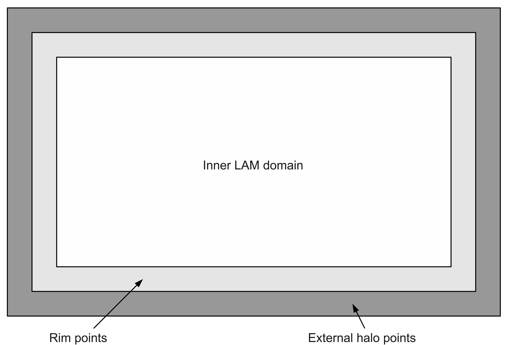

Lateral Boundary Conditions#
In order to run the UM at high resolution over a small domain i.e. as a Limited Area Model - LAM, you must specify Lateral Boundary Conditions - LBCs to provide time-dependent information to the constrain the solution.
A UM LBC file must contain the following:
Orography, single level
Zonal (U) and meridional (V) winds on all (rho) levels
Vertical (W) wind on all (theta) levels + 1 (extra level at the surface) - Density (rho) on all (rho) levels
Potential temperature (theta) on all (theta) levels
Specific humidity (Q) on all (theta) levels
Specific cloud water content (QCL) on all (theta) levels
Specific cloud ice content (QCF) on all (theta) levels
Exner pressure on all (rho) levels + 1 (extra level at the top)
In this document we will use an example LAM with the following resolution:
80 columns × 81 rows horizontal grid
38 model levels
9 point rimwidth
5 point external halo size
See image for a schematic.

The LBC file includes all the shaded areas, while the LAM model comprises the light gray rim points and the inner domain. Taken from https://code.metoffice.gov.uk/doc/um/latest/papers/umdp_C71.pdf
Rim points#
Rim points are part of the LAM domain. At these points the LBC data is blended with the field data. The amount of blending is controlled by the weights associated to each rim point. These are set with the Rose app
[namelist : lbc_options]
The outermost rim points have weight 1.0 (i.e. assign values equal to a outer-model) and the inner-most points have weight 0.0 (i.e no influence from the outer-model). In this example, the weighting of the 9 rim points is:
[1.0, 1.0, 1.0, 1.0, 1.0, 0.75, 0.5, 0.25, 0.0]
These weights are used to interpolate the required fields (listed above) from the LBC data to the field data. At the start of the model run, the values at the rim point will be generally be a linear interpolation between the LBC and those in the reconfigured start stump.
Halos are still included in the LBC file, but they have become redundant. They are used when the domain is parallelised.
There are three principle fields used in the UM:
P fields. Pressure fields computed on a horizontal grid along with all prognostic fields.
U fields. U-component (horizontal) of wind on a staggered grid relative to the P grid.
V fields. V-component (vertical) of wind on a staggered grid relative to the P.grid.
To parallelise a UM run, the LAM (including external halos) are split across the horizontal domain only. Each processor has the full set of vertical levels.
Splitting up our sample domain across four processors requires the use of external halos to exchange information between processors. Each processor will deal with a separate chunk of LBC data.